CC / PROJECT PRESENTATION
Student life.
Organized.
Student Management Dashboard
A shared place for clubs, activities and participation.
StudentsClub ownersTeachers

PROJECT WALKTHROUGH / NOVEMBER 2026
01 / THE PROBLEM
One connected school experience
Bring the steps around an activity into one place.
01Discover
Students need a clear way to find clubs and upcoming activities.
02Coordinate
Club owners need registrations, member lists and attendance together.
03Keep a record
Teachers need visibility into applications, participation and council teams.
The project connects discovery, organization and reflection.
02 / WHO USES IT
Three perspectives. Clear responsibilities.
Club ownership is a responsibility within the student role.
01Student
Browse and join clubs. Register for activities. Read journals and share feedback.
02Student club owner
Manage owned clubs, plan activities, record attendance and publish journals.
03Teacher
Review club applications, organize official events and manage student council years.
The original internal teacher role is named “founder”; student club founders stay students.
03 / THE EXPERIENCE
From an idea to a shared memory
A complete journey around a school club.
01Apply
Propose a club
02Approve
Teacher reviews
03Organize
Plan an activity
04Participate
Register and attend
05Reflect
Journal and feedback
Notifications connect the people involved at each stage.
04 / STUDENT EXPERIENCE
A useful starting point
See clubs, registrations and community activity at a glance.
Student / Home- Dashboard summaries come from stored application data.
- Club and activity links lead into the next action.
- Language and theme controls support the existing interface.
Select the image to open the complete page.
ACTUAL APPLICATION / DEMO DATA
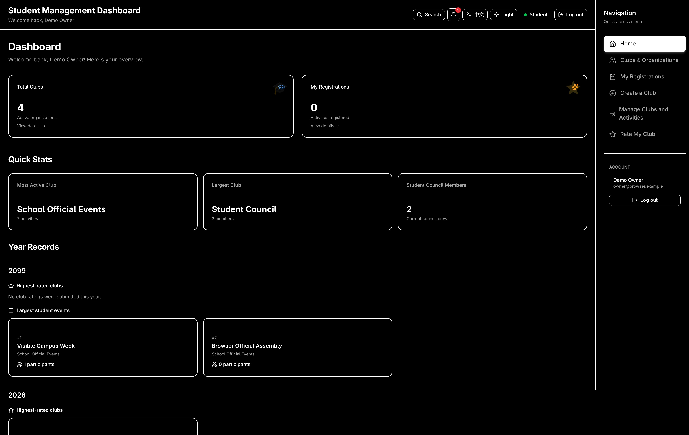
04 / STUDENT EXPERIENCE
Find a club. Find your people.
Browse categories and open a club to explore its activities.
Student / Clubs & Organizations- Explore clubs and organizations by category.
- Join or leave ordinary clubs from the interface.
- Official organization membership is managed by teachers.
Select the image to open the complete page.
ACTUAL APPLICATION / DEMO DATA
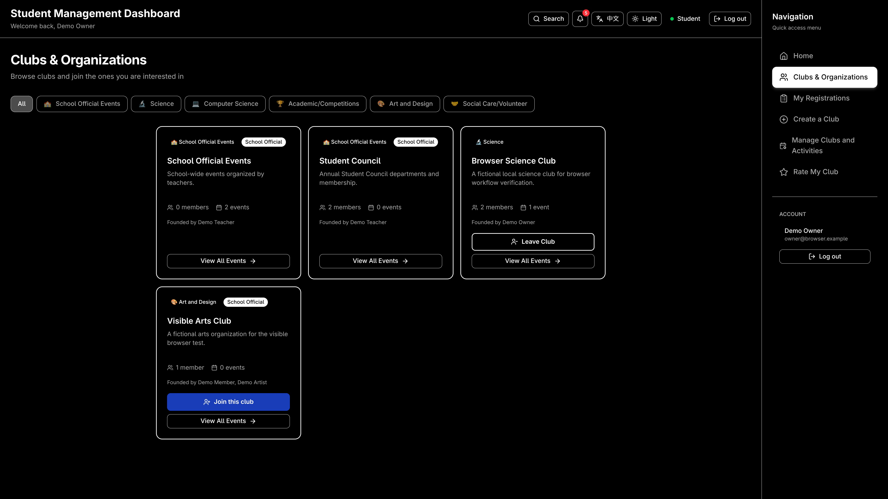
04 / STUDENT EXPERIENCE
Make participation straightforward
View an activity, register, then find it in My Registrations.
Student / Club detail- View upcoming and past activities for a club.
- Registration checks available capacity and whether the activity is open.
- My Registrations brings a student's bookings together.
Select the image to open the complete page.
ACTUAL APPLICATION / DEMO DATA
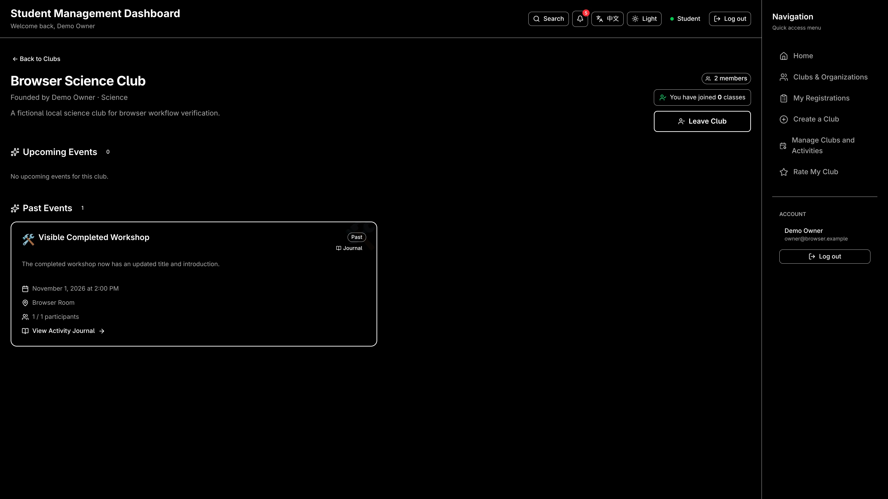
05 / CLUB APPLICATIONS
Turn a club idea into a proposal
A structured application connects students with teacher review.
Student / Create Club & My Applications- Provide club details, category and founder names.
- Official-club requests also identify a managing teacher.
- Track the decision and read the teacher's feedback.
Select the image to open the complete page.
ACTUAL APPLICATION / DEMO DATA
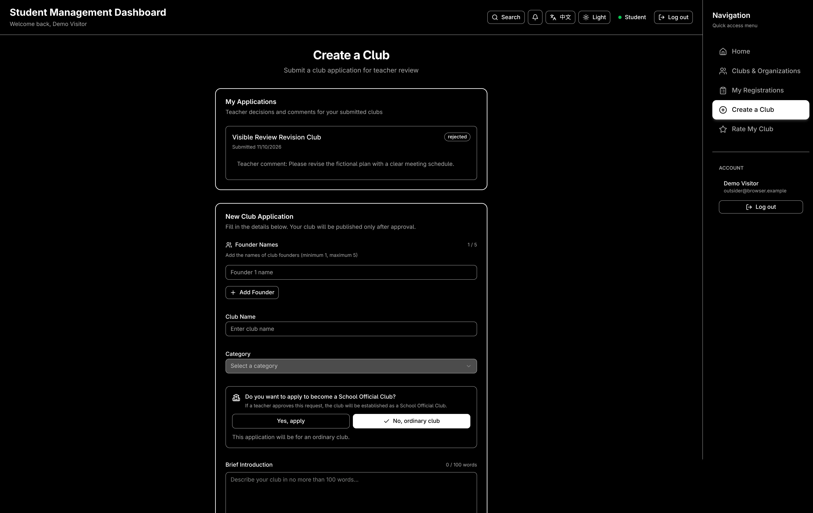
06 / CLUB OWNER EXPERIENCE
One place to run a club
Owned-club tools separate member work from activity planning.
Student club owner / Activity management- Open member rosters and weekly check-in.
- Add and edit activities for an owned club.
- Cancel upcoming activities with a participant message.
Select the image to open the complete page.
ACTUAL APPLICATION / DEMO DATA
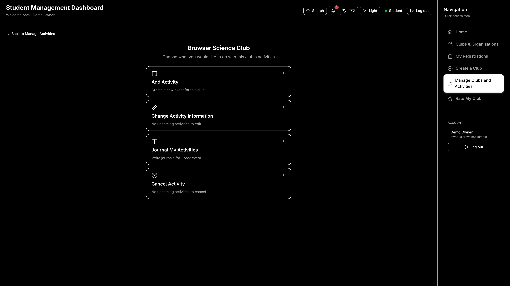
06 / CLUB OWNER EXPERIENCE
Record attendance by week
A calendar view turns participation into a usable record.
Student club owner / Weekly check-in- Choose a week and mark present, absent or leave.
- Records belong to a club, student and week.
- Three present sessions help determine rating eligibility.
Select the image to open the complete page.
ACTUAL APPLICATION / DEMO DATA
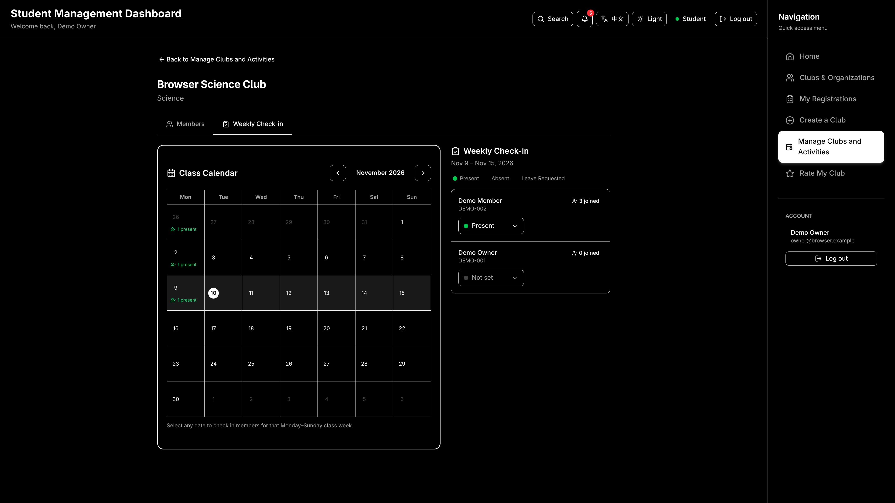
07 / JOURNALS & COMMUNITY
Give each activity a story
Publish reflections, participants, photos and a social link.
Community / Published activity journal- Club owners create and edit the activity journal.
- Authenticated users can view published journals.
- Likes, rated comments and replies keep the conversation going.
Select the image to open the complete page.
ACTUAL APPLICATION / DEMO DATA
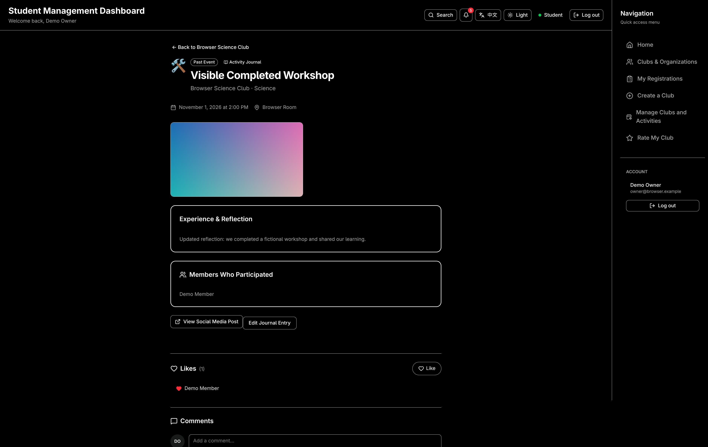
07 / JOURNALS & COMMUNITY
Feedback grounded in participation
Club ratings combine attendance eligibility with community feedback.
Student / Rate My Club- Students must be members with three present sessions to rate.
- Ratings cover four dimensions plus an overall score.
- Students can update their rating; teachers can review summaries.
Select the image to open the complete page.
ACTUAL APPLICATION / DEMO DATA
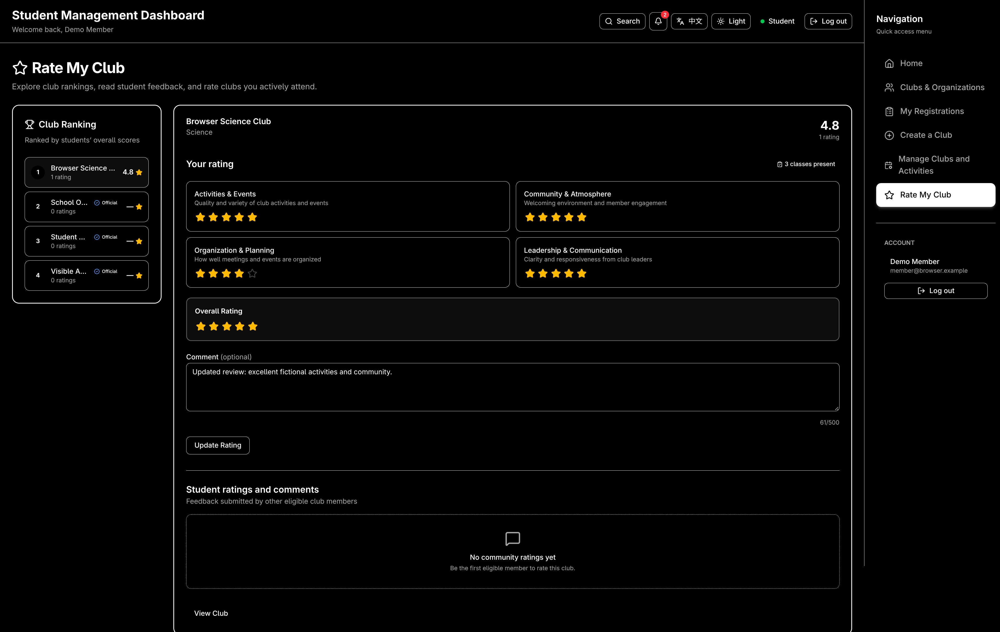
08 / TEACHER EXPERIENCE
Support clubs with clear decisions
The teacher home page brings applications and school activity together.
Teacher / Management board- Review pending club applications.
- Approve a club or reject it with a reason.
- Applicants receive the result and feedback.
Select the image to open the complete page.
ACTUAL APPLICATION / DEMO DATA
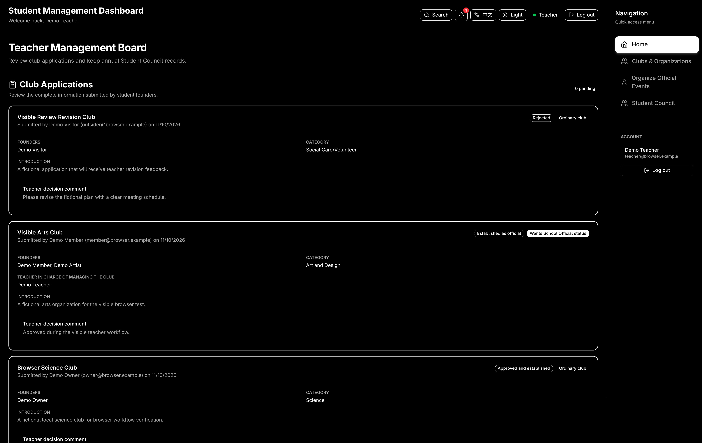
08 / TEACHER EXPERIENCE
Coordinate official school activity
Teachers publish official events and review participation.
Teacher / Official events & participation- Create official events using the activity form.
- View students registered for each event.
- Review club attendance and rating summaries.
Select the image to open the complete page.
ACTUAL APPLICATION / DEMO DATA
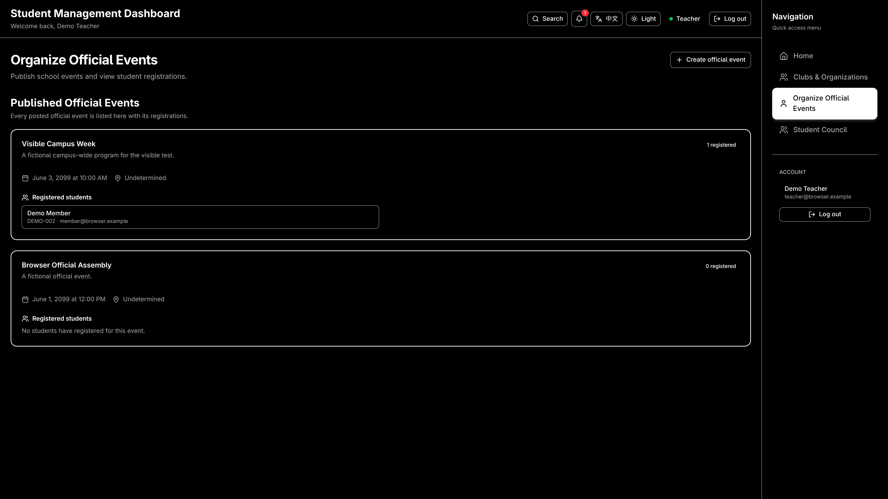
08 / TEACHER EXPERIENCE
Keep council years connected
Create a new team while preserving earlier council terms.
Teacher / Student Council- Set the school year and departments.
- Search and select students for the new crew.
- Archive the previous term and inspect its details later.
Select the image to open the complete page.
ACTUAL APPLICATION / DEMO DATA
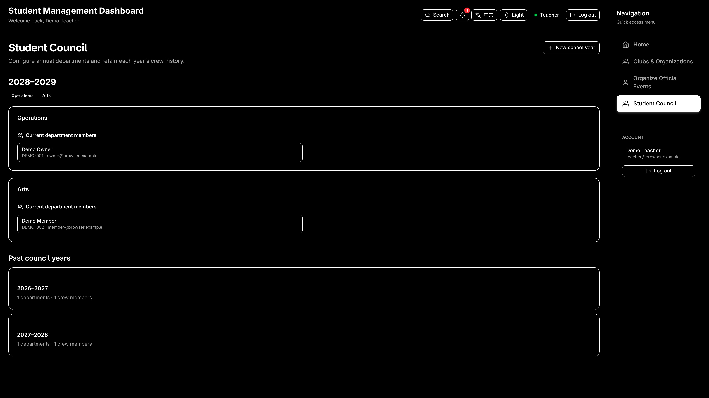
09 / KEEP PEOPLE INFORMED
Close the loop with notifications
Updates appear where people can act on them.
Student / Cancellation notification- Application decisions return to the applicant.
- Registrations and journal interactions inform the relevant people.
- Cancellation notices preserve the message for participants.
Select the image to open the complete page.
ACTUAL APPLICATION / DEMO DATA
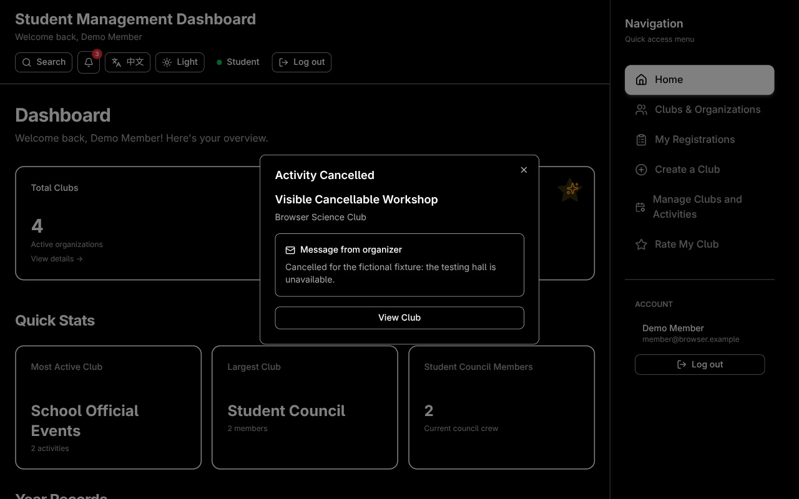
10 / HOW IT WORKS
A shared UI. A persistent backend.
A TypeScript monorepo connects the screens to stored data.
apps/webReact + Vite
Routes, forms and role-aware views
sharedZod + TypeScript
Request / response contracts and helpers
apps/serverExpress 5 + Better Auth
Sessions, validation and authorization
PostgreSQLDrizzle ORM + migrations
Users, clubs, activities, records and photos
Browser → Authenticated API → Validated command → Database transaction
The server checks identity and permissions before saving a command in a transaction.
11 / IMPLEMENTATION CHOICES
Make the records dependable
Checks live alongside the data and workflows.
01Identity
Better Auth sessions identify the user. Teacher and owner permissions are checked by the server.
02Validation
Shared Zod contracts check command inputs and responses. Capacity, attendance and journal rules are enforced.
03Persistence
PostgreSQL stores business data and journal photos. Transactions keep connected writes together.
Students receive scoped data; roster contact access depends on role and ownership.
12 / WHAT IS IN SCOPE
Show the product as it exists
Visible workflows and backend-only services are distinct.
01Visible in this presentation
Clubs, applications, activities, registrations, attendance, journals, feedback, official events, council years and notifications.
02Backend-only today
Club and event election services exist, but election links redirect to Clubs. There is no rendered election or scoring screen.
Screenshot evidence demonstrates captured interface states. Test results are reported separately in the project handoff.
CC / PROJECT TAKEAWAY
Discover. Participate.
Organize. Reflect.
One connected workflow for extracurricular life.
Students take part. Club owners coordinate. Teachers support and oversee.
CCSTUDENT MANAGEMENT
PROJECT PRESENTATION
Explore the page gallery next, or open the dashboard for a live walkthrough.
EXPLORE / 42 REAL SCREENS
One system. Seven journeys.
Follow a workflow. Swipe through the evidence.
AnonymousSign in, empty credentials
Sign in with empty credentials; no account details are exposed.
Open original ↗ Student club ownerDashboard
The owner’s dashboard collects clubs, activities and quick actions.
Open original ↗ Student club ownerClubs and organizations
Browse clubs and organizations before opening a detail page.
Open original ↗ Student club ownerClub detail and activities
Inspect a club’s description and its activity list.
Open original ↗ Student club ownerClub member directory
Open the club’s member directory.
Open original ↗ Student memberNavigation search dialog
Use the navigation search dialog to find destinations.
Open original ↗ Student applicantCreate Club / My Applications, teacher feedback
Create a club and revisit application status with teacher feedback.
Open original ↗ Student applicantOfficial club application teacher fields
The official club application includes teacher-related fields.
Open original ↗ Registered studentUpcoming and past registrations
Revisit upcoming and past activity registrations.
Open original ↗ Student memberEligible rating edit and ranking
An eligible member can edit a rating and inspect the ranking.
Open original ↗ Student memberRating attendance/membership requirement
Rating requires the displayed membership and attendance conditions.
Open original ↗ Student memberJournal without owner edit controls
Members read the journal without owner editing controls.
Open original ↗ Student club ownerPublished activity journal
Read a published activity journal with its photo and discussion.
Open original ↗ Student club ownerManage clubs and activities
Begin management by choosing clubs or activities.
Open original ↗ Student club ownerManage club selection
Select an owned club to manage.
Open original ↗ Student club ownerSelected club management choices
The selected club exposes member and attendance management choices.
Open original ↗ Student club ownerManage members
Inspect the selected club’s member roster.
Open original ↗ Student club ownerWeekly attendance
Record weekly attendance from the club calendar.
Open original ↗ Student club ownerManage activity club selection
Select the club whose activities you want to manage.
Open original ↗ Student club ownerActivity management options
Choose creation, editing, cancellation or journaling.
Open original ↗ Student club ownerCreate activity
Enter a new activity’s details in the creation form.
Open original ↗ Student club ownerEdit activity selection
Select an activity before requesting an edit.
Open original ↗ Student club ownerPast activity edit guard
The past-activity guard blocks editing after an event has ended.
Open original ↗ Student club ownerCancel activity (no remaining future events)
The cancellation selector is empty after the recorded cancellation.
Open original ↗ Student club ownerJournal event selection
Choose an event before opening its journal.
Open original ↗ Student club ownerJournal edit form
Edit the journal narrative and photo reference in the owner form.
Open original ↗ TeacherTeacher Management Board
The teacher board brings review and administration tasks together.
Open original ↗ TeacherTeacher organization directory
Teachers browse the organization directory from their own role.
Open original ↗ TeacherTeacher club detail
The teacher detail view shows the club and its activities.
Open original ↗ TeacherTeacher member directory
Teachers can inspect the club member directory.
Open original ↗ TeacherAttendance and rating summary
Review attendance and rating summaries for club participation.
Open original ↗ TeacherOfficial organization membership management
Manage official organization membership from its summary.
Open original ↗ TeacherOfficial events and registered students
Review official events and their registered students.
Open original ↗ TeacherOfficial event organization
Open the official event organization and its event list.
Open original ↗ TeacherNew official event form
Prepare an official event using the teacher creation form.
Open original ↗ TeacherStudent Council organization
Inspect the Student Council organization page.
Open original ↗ TeacherCouncil current and archived crews
Browse the current council and archived council crews.
Open original ↗ TeacherNew council year form
Prepare a new council year with its crew assignments.
Open original ↗ TeacherArchived council year detail
Open a past year to inspect its archived council crew.
Open original ↗ Student memberNotification list and read state
Inspect notifications and their read state from the dashboard.
Open original ↗ StudentRole access denied (intentional guard)
A student reaching a teacher-only page sees Access Denied.
Open original ↗ StudentMissing club (intentional guard)
A missing club identifier produces the Club Not Found guard.
Open original ↗ Swipe or use ← → · P to play / pause